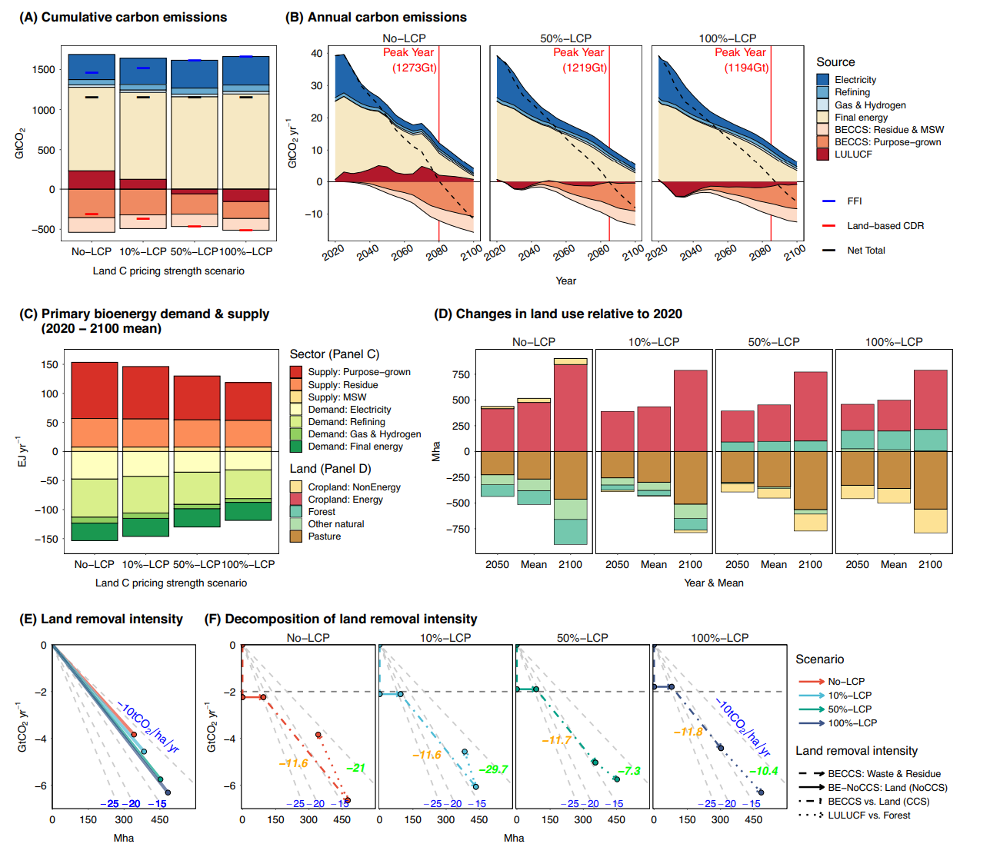

The deployment of bioenergy with carbon capture and storage (BECCS) is influenced by land-system mitigation policies, and valuing soil carbon storage reduces emissions leakage, lowering mitigation costs.
The IPCC’s AR6 emphasizes the importance of land-based carbon dioxide removal (CDR) measures, such as reforestation and bioenergy with carbon capture and storage (BECCS), to meet the Paris Agreement goals. The suggested carbon budgets for limiting global warming to well below 2°C and 1.5°C are 1150 and 500 GtCO2, respectively. The AR6 scenario database indicates a cumulative land-based CDR of 460 (350–560) GtCO2 between 2020 and 2100, with BECCS and reforestation playing significant roles. Challenges include potential trade-offs between BECCS and land-use change, land-use change, and forestry (LULUCF) removals, suggesting leakage issues. Land-intensive BECCS and reforestation face challenges related to advanced technologies and expanding forests, respectively.

Variability among models in considering land-system mitigation policies makes it challenging to understand drivers and trade-offs fully. A new study published in Nature Communications used the Global Change Analysis Model (GCAM) to highlight the policy effects on land-based CDR, trade-offs, and global market-mediated responses. Different scenarios with varied carbon pricing and mitigation policies provide insights into policy effectiveness and implications for agricultural commodity prices. However, uncertainties related to sustainability, resource use, and institutional challenges in large-scale land-based CDR deployment require careful consideration by decision-makers.
The exploration centers on the uncertainty in predicting land-based carbon dioxide removal (CDR) and its economic and environmental impacts. Analyzing various scenarios with land-based mitigation policies, a range of 100 to 700 GtCO2 for cumulative land-based CDR by the end of the century is revealed.
The deployment of bioenergy with carbon capture and storage (BECCS) is influenced by land-system mitigation policies, and valuing soil carbon storage reduces emissions leakage, lowering mitigation costs. The examination emphasizes the inverse relationship between cumulative BECCS and land-use, land-use change, and forestry (LULUCF) removals, highlighting the contribution of BECCS and reforestation to 1.5°C and 2°C scenarios.
Insights include the higher removal intensity of BECCS over time, sensitivity of BECCS to feedstock and technology choices, and the importance of soil management and policy choices for reforestation. Tradeoffs between removal effectiveness and agricultural price responses are emphasized, underscoring the need for careful design of land-based mitigation policies considering food security and sustainability. The research suggests improvements in Integrated Assessment Models (IAMs) by harmonizing land-based mitigation policies and assumptions, providing information for future model comparison efforts in the context of climate change mitigation.
"Korea, with limited land area, will face difficult time scaling up land-based natural climate solutions," said KAIST visiting professor Haewon McJeon, who coauthored the study. "As such, they will need to focus more heavily on innovation to reduce hard-to-abate sectors."
Read the full paper here: https://doi.org/10.1038/s41467-024-46575-3
한국어 요약
1.5도 및 2도 미래에서의 육상 기반 탄소 제거 수단의 트레이드오프
파리 협정 목표를 달성하기 위해 산림을 포함한 이산화탄소 제거 (CDR) 방안의 중요성이 커지고 있는 가운데 카이스트 녹색성장지속가능대학원 전해원 방문교수를 포함한 연구진은 토지 기반 탄소제거 예측의 불확실성과 경제 및 환경적 영향에 대해 분석한 논문을 국제 학술지 네이처 커뮤니케이션에 출간하였다.
이 연구는 육지 기반 완화 정책을 활용하여 다양한 시나리오를 분석을 통해 BECCS의 높은 제거 강도, BECCS의 원료 및 기술 선택에 대한 민감성, 그리고 토양 관리 및 정책 선택의 중요성을 제시한다. 또한 세계 각국이 탄소중립을 위해 노력하는 가운데, 난감축 부문의 배출량을 오프셋할 천연 기후 솔루션의 역할이 대두됨을 시사하며, 다양한 토지 기반 기후 솔루션의 장단점에 대해 체계적으로 분석한 것에 의의가 있다.